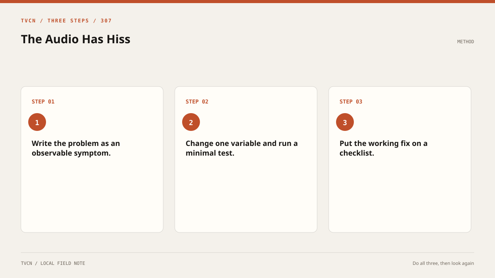

On set
Turn off the air conditioning, change cables, and lower gain to -12 dB. Change the mic last.
Do this
Hiss starts with the room, air conditioning, cables, and gain. The microphone is the last thing to replace.
- Turn off AC, fridge, and lights; record thirty seconds of silence and listen for the source.
- Change outlets and cables; put gain on the recorder, not the microphone.
- Move the subject closer to the mic and record room tone for a post bed.
Avoid
Do not buy a new mic first; the noise may be the room.
Three-step flow

Three causes
For “The Audio Has Hiss”, check three directions first. Change one variable, record a 30-second comparison, and see which link the change follows.
| Cause | Signal on set | Five-minute test |
|---|---|---|
| Gain structure | The mic gain is high and the noise floor rises with it | Lower gain until peaks sit near -12dBFS and listen again |
| Room reflections | A persistent hum or ring stays when the mic moves | Record 30 seconds of room tone and move the mic |
| Cable or input | Noise changes with a cable swap; a loose connector clicks | Swap cable, input and battery one at a time |
On-set diagnosis
- Record 30 seconds of a quiet room with no speech and listen to the noise alone.
- Solo the dialogue track and classify the noise: hiss, low hum, or intermittent clicks.
- Swap cable, input and power one by one to see which stage carries the noise.
Fix
Noise floor is not solved by one denoise preset. Move the mic closer, stage the gain in two steps, and remove constant room sources.
- Keep the mic 15–20 cm from the mouth; tape the lav inside the collar away from fabric rub.
- Stage gain: recorder input to about -18dBFS, then trim; keep dialogue peaks near -12dBFS.
- Turn off air conditioning, fridges and projector fans; if you cannot, record room tone for matching.
- Route cables away from power adapters; keep wireless receiver and transmitter in line of sight.
- In post, denoise only until the processing is inaudible; do not chase absolute silence.
Failure cases
With “The Audio Has Hiss”, these three moves make it worse. Pick one replacement action and do not change three variables at once.
| Failure | Why it gets worse | Replace with |
|---|---|---|
| Maximum denoise | Dialogue becomes hollow; consonants and tails disappear | Limit reduction to 6–10dB and keep room tone |
| Auto gain | Noise breathes between lines and jumps in the edit | Set manual gain and lock it before rolling |
| Swap only the mic | The noise is in the room or cable, so the new mic changes nothing | Check room, cable and input in order |
Acceptance table
Acceptance is not “it feels better”; all four must be identifiable, playable and logged.
| Check | Pass line | Log |
|---|---|---|
| Room tone | 30 seconds loops without sudden HVAC events | Keep the original file |
| Dialogue peaks | Normal speech peaks around -12dBFS, no clipping | Recorder meter |
| Noise floor | Quiet gaps stay steady, not pumping between lines | Solo dialogue |
| Intelligibility | Every word is clear without guessing from subtitles | One headphone pass |
Image note. Covers, diagrams and step images on this page are editorial illustrations or structure diagrams, not photographs of a test performed here; they are not evidence of measured gear performance. Where an image is AI-assisted, the caption says so. Read the test conditions in the text before treating an image as proof.